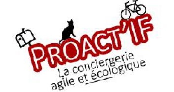

Bienvenue sur Proact'IF, la conciergerie agile et écologique !
Vous avez besoin de récupérer une livraison et vous n'êtes pas disponible ?
Vous recevez un appel de votre voisin qui vous prévient d'une fuite d'eau
alors que vous n'êtes pas chez vous et que ne pouvez pas vous
déplacer ? Votre animal de compagnie a besoin d'être nourri ou sorti et vous
êtes bloqué au bureau ? Nous sommes là pour vous : une intervention rapide,
à vélo, jusqu'à votre domicile pour sauver votre journée !
Proact'IF , ce sont des dizaines de professionnels prêts à tout pour répondre
à vos besoins ! En plus, nous mettons l'écologie en avant et nos prix n'ont rien
à cacher !